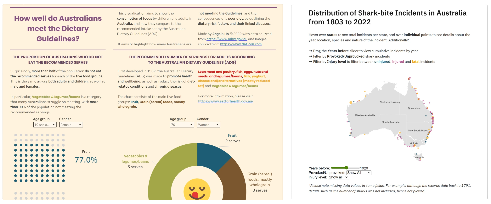

Data Visualisations
Australian Diet Shark bite incidentsOverview
Two interactive data visualisations exploring Australian diets (Tableau) and shark bite incidents (VegaLite, JavaScript) that I created during uni.
Team
Timeline
Scope
Data cleaning and analysis
Australian diets visualisation
View the full visualisationDomain
The visualisation explores the domain of ‘diet’, specifically analysing the question of ‘How well do Australians meet the Dietary Guidelines?’. It looks into what Australians are consuming in terms of the five major food groups, where they are lacking, and the associated dietary risks and diseases.
What? - Datasets used and process
Datasets were sourced from government resources. All datasets were of table types.
To make it easier to work with Tableau, most of the data was reformatted into excel sheets - mostly changing the column and rows, excluding irrelevant attributes, or combining tables.
- Recommended number of serves for adults (Australian Government Department of Health and Aged Care, 2015)
- Tables S1 to S7 from Data tables: Nutrition across the life stages (Australian Institute of Health and Welfare, 2018)
- Table 2 from Diet (Australian Institute of Health and Welfare, 2022)
- Table 3 from Data tables: ABDS 2018 Risk factor estimates (Australian Institute of Health and Welfare, 2021)
Why and how? - Decisions and rationale
Recommended number of servings for adults
The donut chart was used to display the recommended dietary intake, as a part of a whole. Colour hue channels were used to separate the 5 major food groups. I used intuitive hues such as brown for wholegrains, and green for vegetables, etc. to aid in identification. These hues were repeated for consistency throughout the visualisation.

Donut chart with tooltip representing the recommended servings for adults
Consumption of food groups in comparison to the ADG
Bar charts were used for comparison. Additionally, a Gantt chart was used to represent the ADG target, using vertical positioning, for further comparison against the ADG.

Bar chart with tooltip representing the serves consumed across the five food groups, and how it compares to the ADG
Proportion of Australians who do not eat the recommended serves
The waffle charts were used to show proportions of populations, with percentage annotations for more accurate readings.

Waffle chart with tooltip representing the proportion of Australians who did not meet the Dietary Guidelines (cropped)
Dietry risk factors and linked diseases measured by attributable DALY
A sankey diagram was used to show the linkage between dietary risk and disease, with the size of each flow representing the attributable DALY number. The sankey diagram can also be used to determine the proportion of dietary risk/disease due to the size of the stacked bars, where it is easy to see which dietary risks/diseases are most prevalent.

Sankey diagram with filtering and tooltip representing dietary risks and linked diseases
Shark bite incidents visualisation
View the full visualisationDomain
The visualisation explores the domain of shark bite incidents in Australia, exploring topics such as:
- The distribution of shark bite incidents in Australia from 1803 to 2022
- Trends of shark-bite incidents
- The top 5 perpetrators of shark-bite incidents, including distribution of fatal, injured and uninjured incidents per shark
- Timing of shark bite incident based on month, and
- Victim activity during the time of the incident
What? - Datasets used and process
The visualisation uses the Australian Shark-Incident Dataset (Taronga Conservation Society Australia, 2022)
The charts were created using Vega-Lite, with reference to Vega-Lite examples and Studio code as a base. The website and layout was coded in HTML and CSS. TopoJSON file for Australian states by Abdiel Oluyomi (alwaysblazing, 2017).
The cleaning process involved:
- Removing empty values
- Removing values with coordinates too far from Australia
- Adjusting column names with underscores (e.g. Shark.common.name → Shark_common_name)
Further, custom .csv files were made on states, and percentage values for the map and radial chart for annotation purposes.
Why and how? - Decisions and rationale
Distribution of shark-bite incidents in Australia
A proportional symbol map was chosen to visualise the distribution of shark-bite incidents across Australia, due to it displaying raw ‘counts’ of shark-bite incidents. It was chosen instead of a dot map, as more information could be conveyed by having the size channel encoded based on the number of sharks present during the incident.

Proportional map visualisation of the distribution of Australian shark-bite incidents 1803-2022, including filtering options
Trend of shark-bite incidents
A bar and multi-line combination chart was chosen, as it allowed for comparison between uninjured, injured and fatal incidents, as well as display the context shown through the ‘total incidents’ bar chart. This was chosen over other idioms, such as a stacked area chart and stacked bar, which did not allow for the same point of comparison.

Combination (bar and multi-line) visualisation of the trend of shark-bite incidents
Top 5 perpetrators of shark-bite incidents
A stacked bar idiom was chosen as it not only allowed sharks to be ranked by their total incidents, it also displayed the distribution of incidents based on injury level, so that viewers had the option to (1) compare between sharks, (2) compare between injury level within sharks, or (3) compare between injury levels between sharks.

Stacked bar chart, ranking sharks based on incidents, as well as showing distribution of fatal, injured and uninjured incidents
Timing of shark-bite incidents
A table bubble plot idiom was chosen over options like the heat map, as it also incorporated a size channel along with colour to indicate the number of incidents within the month. Additionally, this number is supported by text annotations.

Table bubble plot displaying the number of shark-bite incidents per month, sorted by the top 5 sharks
Victim activity during time of incident
A radial plot idiom chosen so viewers could compare the relative sizes of the activity with one another, to get the sense of the dominating victim activity recorded. This was supported by the size channel, where the viewer can gain this information at a glance, compared to idioms like pie and donut charts.

Radial plot displaying victim activity during the incident
Other Projects